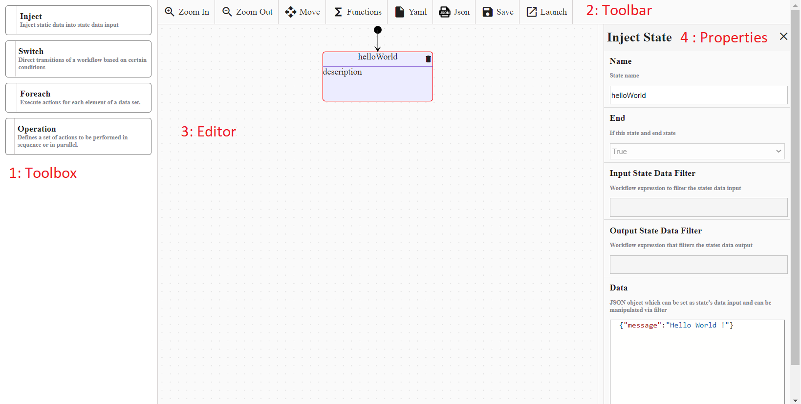
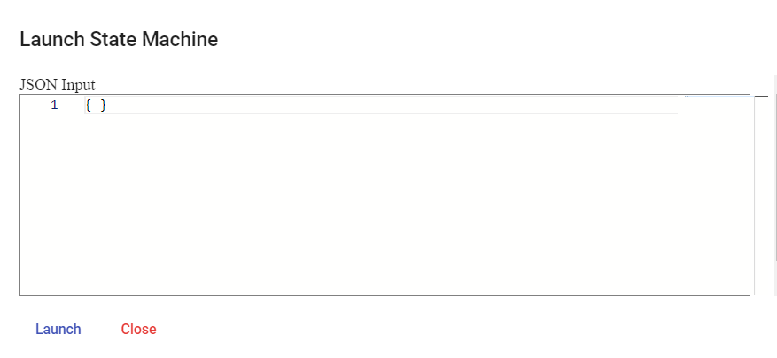
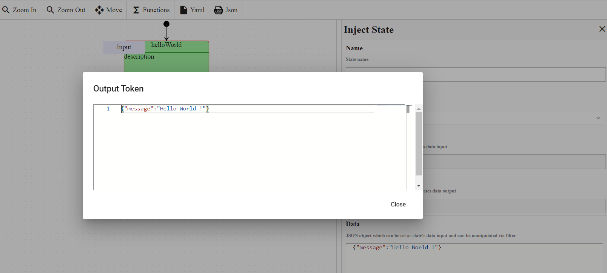

Hello World workflow
Warning
Make sure your working environment is properly configured.
The FaasNet project implements the Serverless Workflow specification. Thanks to the web portal, a workflow/state machine can easily be developed and published by any developers.
Create workflow
In the website, click on the Add a State Machine button and fill in the form with the following information and click on Create button.
- Name : Name of the workflow for example
test. - Description : Short description.

The state machine will be published and displayed in the table.

Edit the workflow
In the table, click on the link to edit the workflow. The edition view contains four blocks:
- Toolbox : States which can be added to the workflow for example : Injection and Switch state.
- Toolbar : List of possible actions : save workflow, create and launch an instance.
- Editor : Structure of the workflow.
- Properties : Properties of the selected state.

Launch the workflow
Click on the Launch button. A popup Launch State Machine will be displayed, pass an empty JSON object in the textarea and click on the Launch button. If the instance is successfully launched then a successful message will be displayed.

Navigate to the State Machine instances view and click on the latest instance displayed in the table.
The UI displays all the incoming and outoing tokens of all the states.
